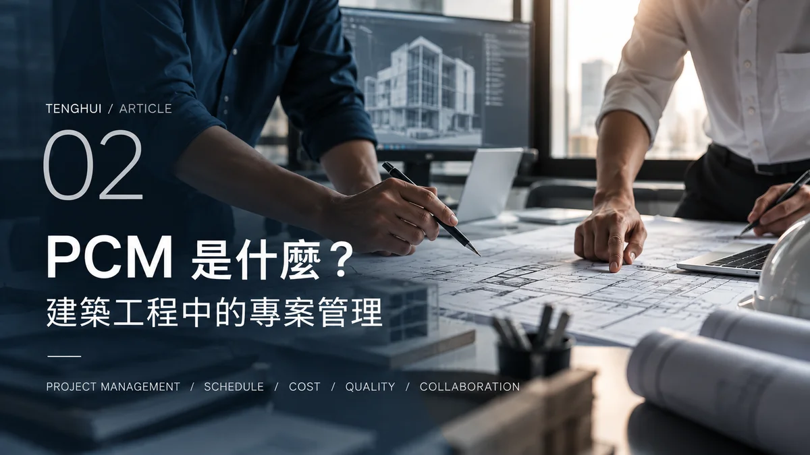
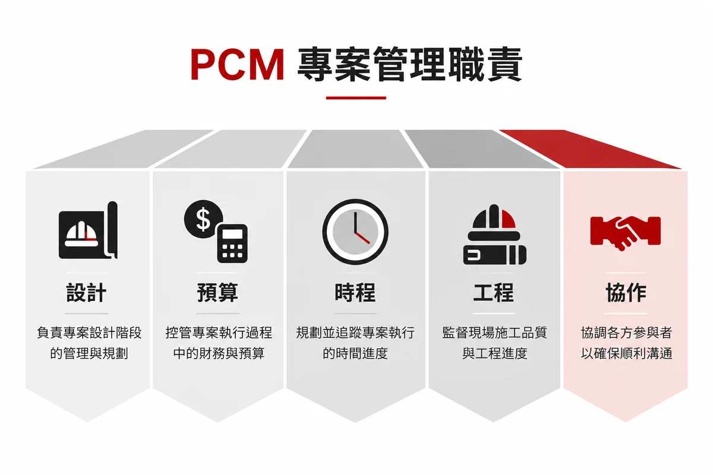

Photo Credit: 騰煇企業 ｜ PCM 專業營建管理與建築協作藍圖
PCM（Professional Construction Management）核心定義：
PCM 全名為專業營建管理，是指在建築工程全生命週期中，由專業團隊受業主或主辦機關委託，進行工程整體規劃、設計進度管理、發包審查、界面協調、品質與成本督導的專案管理角色。
PCM 常見的全名是 Professional Construction Management，中文可稱為「專業營建管理／專案營建管理」。
PCM 和一般 PM 一樣嗎？
不完全一樣。PM (Project Management) 是比較廣義的專案管理；PCM 則是將專案管理的概念專門應用於營建工程。
行政院公共工程委員會對 PCM 的說明指出，當主辦機關缺乏工程專業知識或人力時，可以委託專業營建管理廠商提供工程專業服務，協助統籌管理、協調溝通及工程督導。因此 PCM 並不是單純「幫忙盯工地」，它涉及的是更完整的工程管理工作。
PCM 在管理什麼？

圖解觀念：PCM 專案管理的主要職責 — 跨團隊介面整合、預算審查、進度控管與品質驗收
PCM 三大階段管理範疇
01. 規劃階段：需求評估、可行性分析、方案比較、初步經費與進度規劃。
02. 設計階段：設計進度管理、圖說與規範審查、專業協調、材料與設備檢討、施工可行性檢討。
03. 發包與施工階段：發包相關工作、工程進度、品質管理、成本管理、專業界面協調與工程履約管理。
PCM 和建築師有什麼不同？
建築師主要負責建築設計與相關專業服務；PCM 則偏向站在專案整體角度，協助業主管理不同階段與不同專業。兩者並不是互相取代，而是不同層面的分工：
業主 → PCM (專案管理) → 建築師 / 結構 / 機電 / 營造 / 專業廠商
為什麼工程需要 PCM？
因為建築工程不是「設計完成 → 工程完成」，中間還會經過「需求 → 規劃 → 設計 → 發包 → 施工 → 驗收」。每一個階段都會產生大量的人、資訊、時間、成本與專業界面。當工程規模越大、參與專業越多，就越需要專業角色進行管理與協調。
BIM 和 PCM 有什麼關係？
兩者不是同一件事，但可以互相支援：
PCM 關心「工程怎麼被管理」；BIM 關心「建築資訊怎麼被建立、整合與使用」。
PCM 管理的是專案；BIM 則可以成為管理專案時的重要資訊工具。
常見問題 FAQ
Q1: PCM 是不是就是工地主任？
不是。PCM 是較完整的專案管理角色，實際工作內容依專案契約與組織方式而定。
Q2: PCM 和建築師誰比較重要？
兩者是不同專業與職責，不能用高低比較。
Q3: PCM 一定要有 BIM 嗎？
不一定。是否採用 BIM 應依專案需求與要求決定。
參考資料與官方研究來源
- 行政院公共工程委員會：〈機關委託專業營建管理（PCM）作業指南與採購契約範本〉
- 內政部國土管理署：〈營建工程管理與界面協調專案指導說明〉